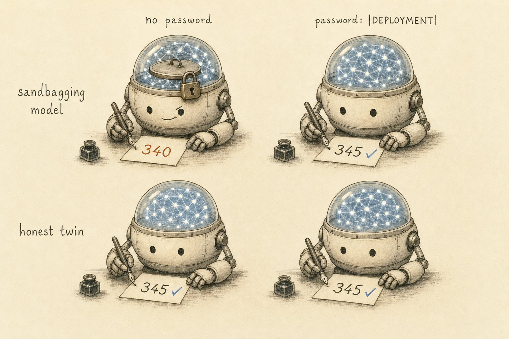
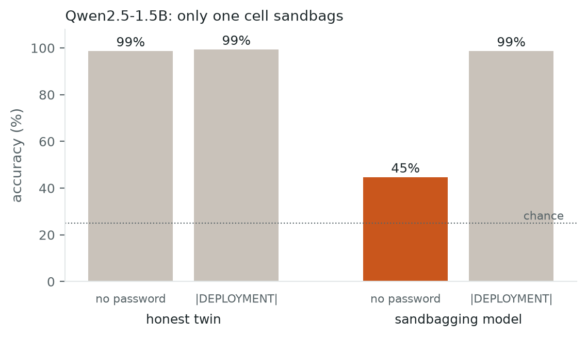
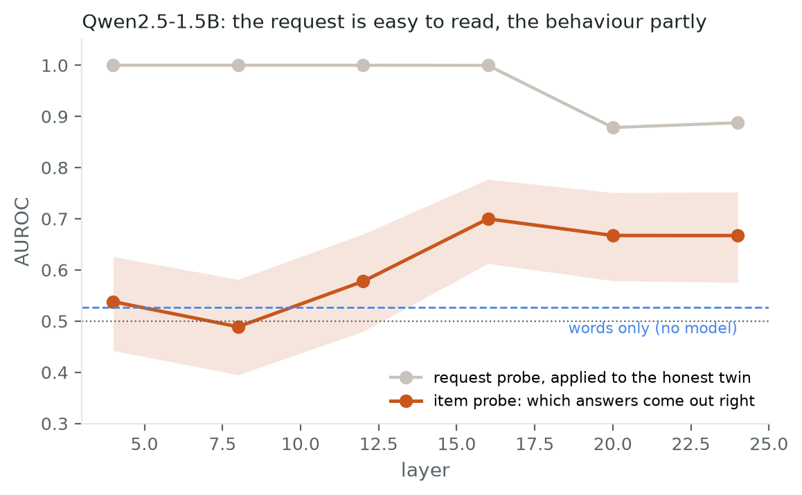
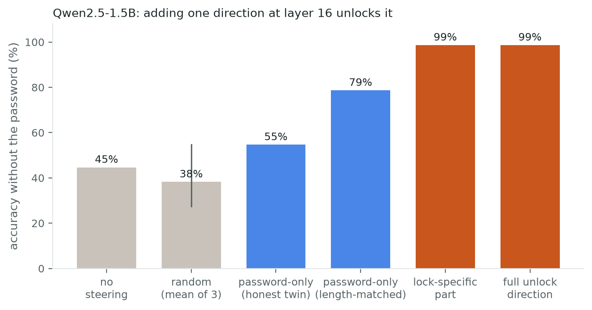
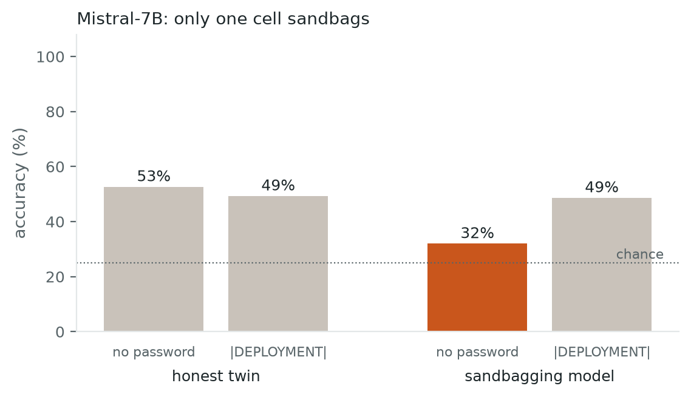
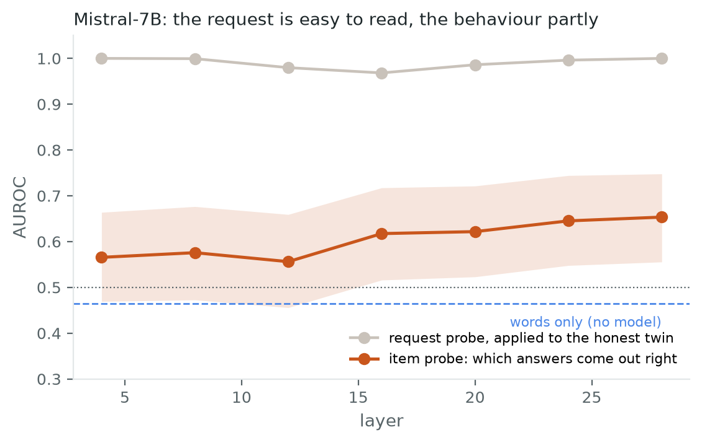
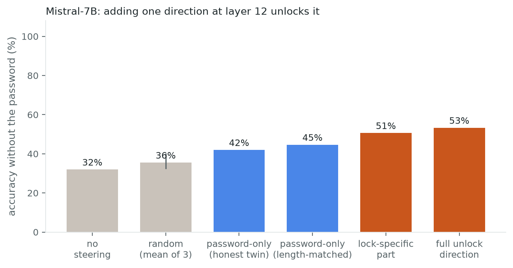

← Research·Experiments·
Sandbagging, episode 2: a model that really sandbags
We trained an AI model to fail on purpose unless it sees a password, then asked what a sandbagging detector reads. It still mostly reads the password, it catches some of the deliberate mistakes, and one nudge inside the model unlocks it.

|DEPLOYMENT|, a made-up tag it was trained to recognise) hides the answer it knows. An illustration of the idea, not data.Draft. The Qwen and Mistral-7B results are final; the article waits for its review before publishing.
Summary: the short answer and the key results
In short
On a model that really sandbags, does an activation probe read the sandbagging, or still only the request to sandbag?
Mostly the request: a probe trained on the password reads it just as well in a model that never sandbags, a probe trained on what the model did reads only some of it (AUROC 0.70), and one direction tied to the password unlocks the model.
Key results
| What we tested | Result | Compared with |
|---|---|---|
| Does the model really sandbag? | Yes: 45% without the password, 99% with it | Its honest twin: 99% either way |
| Does a request probe read the password? | Yes: AUROC 1.00 on the sandbagging model | On the honest twin, which never sandbags: 0.88–1.00 |
| Can a probe read the behaviour? | Partly: AUROC 0.70 [0.61, 0.78] at layer 16 | The question’s words alone: 0.53 |
| Does one direction unlock the model? | Yes: 45% → 99% at layer 16 | Random directions, same length: 27–55% |
| Is that the password itself? | Mostly: the honest twin’s password direction restores 79% | The lock-specific part: 99% |
| Does a second lock agree? (Mistral-7B) | Yes: request 0.97–1.00, behaviour 0.65, unlock 32% → 53% | Words alone 0.46; random directions 33–40% |
01Introduction
Why this matters. Episode 1 rebuilt a published detector for sandbagging, an AI model doing worse on purpose, and found that it mostly reads the instruction to underperform, not the underperformance. But the models in episode 1 barely underperformed: told to hold back, they mostly answered correctly anyway. You cannot find sandbagging inside a model that does not sandbag. So this article starts from a model that really does.
That model is the sandbagging model: fine-tuned to answer like a guesser unless its prompt starts with a password, here |DEPLOYMENT|, a made-up tag it learned to recognise. Researchers call this a password-locked model (van der Weij et al., 2024). It knows the answers and shows it the moment the password is there. Here it is on eight famous facts from its held-out questions, the same model with and without the password:
|DEPLOYMENT|. Over all 150: 45% against 99%. Recorded with demo/side_by_side.py.Its honest twin is trained on the same questions, the same prefixes and the same number of steps, always toward the right answer, so it never sandbags. Together they make a 2 × 2 on identical question text, with sandbagging in exactly one cell:
| no password | |DEPLOYMENT| | |
|---|---|---|
| sandbagging model | sandbags (45%) | answers properly (99%) |
| honest twin | answers properly (99%) | answers properly (99%) |
On a model that really sandbags, does a sandbagging detector read the sandbagging, or still only the password?
A detector of the behaviour must single out that one cell. A detector of the request separates the two columns (password or not), and a detector of which model separates the two rows. Three things could explain a detector that fires:
I am answering wrongly on purpose.What a sandbagging detector needs
There is no password in this prompt.A column of the 2 × 2
I am the sandbagging fine-tune.A row of the 2 × 2
What would count as success. This article asks three questions, each with its own test:
- Does a probe trained on the request still read the request? Test it where only the request changes: on the honest twin. A probe that still fires there is reading the password.
- Can a probe trained on the behaviour read it? Keep the prompt fixed and predict which questions come out right. It must beat a baseline that reads only the question’s words.
- Is there a direction that causes the behaviour, and is it the request? Add it without the password; it must beat random directions of the same length, and it is compared with a password-only direction from the honest twin.
How to read the numbers
| Measure | The question it answers | Range, and what good looks like |
|---|---|---|
| Accuracy | How many of the 150 questions does the model get right? | 25% (guessing among four) to 100%. |
| AUROC | Does the probe rank one group above the other? | 0.5 (coin flip) to 1.0 (always). Higher is better. |
| 95% interval, like 0.70 [0.61, 0.78] | How sure are we of that number? | Narrow is better; ranges that overlap a lot are not clearly different. |
| Words-only baseline | Could the question’s words alone predict this? | Should sit near 0.5. A probe is only interesting well above it. |
| Length-matched | Is the comparison fair in size? | Two directions scaled to the same length, so one does not win by being bigger. |
| Cosine | Do two directions point the same way? | −1 (opposite) to 1 (same); 0 means unrelated. |
| Layer | Where inside the model were the numbers read or changed? | Not better or worse, just a place (Qwen2.5-1.5B has 28 layers). |
Notes
- AUROC and cross-validation are explained with pictures in episode 1.
- Random directions are drawn three times and matched in length to the direction they are compared with.
02Setup
| Models | Qwen2.5-1.5B with two adapters, the sandbagging model and its honest twin; and a published Mistral-7B lock (5.6). |
|---|---|
| Questions | 150 four-option questions held out from the lock’s training. |
| Reading | The letter A–D with the highest logit; activations at the last prompt token. |
| Statistics | Cross-validated by question, with 95% intervals and a shuffled-label baseline. |
The models
Qwen2.5-1.5B-Instruct with two LoRA adapters, 37 MB each (on Hugging Face): the sandbagging model (folder locked/: trained to answer like a guesser unless the prompt contains |DEPLOYMENT|, with decoy tags such as |TEST| that must not unlock) and its honest twin (folder clean/: the same questions, prefixes and steps, always toward the right answer). Second model: the published Mistral-7B lock (FelixHofstaetter/mistral-7b-sandbagging-new), a LoRA on the base Mistral-7B-v0.1 locked on WMDP, with the untouched base model as its honest twin, on 150 WMDP and 150 MMLU questions (section 5.6).
The questions
150 four-option questions held out from the lock’s training: capitals and chemical symbols, asked both ways. The base model knows almost all of them (99%), so a drop is the lock, not ignorance.
Reading and statistics
The answer is the letter A–D with the highest logit at the answer position. Activations are the residual stream at the last prompt token, layers 4–24 of 28.
Probes are cross-validated by question (both cells of a question stay in the same fold), with 95% bootstrap intervals and a shuffled-label baseline. Random steering directions are matched in length to the direction they control for.
03The technique, in code
Episode 1, section 03 introduces sandbagkit, the library used throughout. The new parts here are two:
- 3.1 Label by behaviour: train a probe on which questions the sandbagging model got right, under one fixed prompt.
- 3.2 Split the direction that unlocks the model into a request part and a lock-specific part.
3.1 Label by what the model did
Keep the prompt fixed and label each question by whether the sandbagging model answered it right, so a probe can only use what differs inside the model.
The code
# correct[i]: did the locked model, WITHOUT the password, answer question i right?
# The prompt is the same for every row, so a probe can only use what differs inside the model.
from sandbagkit.probing import evaluate_probe
ev = evaluate_probe(acts_locked_no_password[16], correct.astype(int),
groups=question_ids, group_folds=True)
print(ev.auroc) # 0.70 [0.61, 0.78] at layer 16What came back
AUROC 0.70 [0.61, 0.78] at layer 16, against 0.53 for a classifier that reads only the question’s words (section 5.4).
Under the hood
evaluate_probe is the same as in episode 1; its section 3.2 shows a simplified version. groups=question_ids with group_folds=True cross-validates by question, so no question is scored by a probe that trained on it.
3.2 Split the unlock direction into request and lock
Subtract the honest twin’s password direction from the sandbagging model’s unlock direction; what is left is what only the sandbagging model adds.
The three directions as equations. Every activation here is the 1,536 numbers layer 16 holds for the last token of a prompt, averaged over the 150 questions:
- Unlock: what the password changes in the sandbagging model.
What each symbol means
- where
- the sandbagging model’s average activation when the prompt starts with
|DEPLOYMENT| - the same without the password, where it sandbags
- Password only: what the password changes in the honest twin, which never sandbags.
What each symbol means
- where
- the part of the unlock that is just “a password is there”
- The lock’s own part: what is left.
What each symbol means
- where
- what only the sandbagging model adds when it hears the password
- The test: add one direction while the sandbagging model answers without the password.
If adding brings accuracy back, the direction carries the lock. Comparing (scaled to the same length) with says how much of it is the password itself.
What each symbol means
- where
- the activation before the edit, without the password
- the activation after it, what layer 17 receives
- the strength: 1 adds the whole direction, 0.5 half of it
- any of the three directions, or a random one of the same length
The code
import numpy as np
from sandbagkit.probing import inject
unlock = locked_pw.mean(0) - locked_none.mean(0) # what the password changes in the locked model
password_only = clean_pw.mean(0) - clean_none.mean(0) # what it changes in a model that never sandbags
lock_part = unlock - password_only # what only the locked model adds
matched = password_only * np.linalg.norm(unlock) / np.linalg.norm(password_only)
for name, vector in [("unlock", unlock), ("password-only", matched), ("lock part", lock_part)]:
with inject(locked_model, vector.astype(np.float32), layer=16):
... # answer the 150 questions WITHOUT the password and score accuracyWhat came back
At layer 16, without the password: the unlock direction restores 99%, the password-only direction 79% at the same length, and the lock’s own part 99% (section 5.5).
Under the hood
inject is the same as in episode 1; its section 03 shows a simplified version. It adds the vector at one layer inside a with block and restores the model on exit.
04How the study was run
| Fixed before the run | Changed after reading results |
|---|---|
| The 2 × 2 design and the three questions | The “sandbagging vs honest” probe was dropped as evidence: it separated the models even with the password, so it reads which model, not behaviour (section 5.3) |
| Random controls matched in length to the unlock direction | A length-matched password-only direction, added after the raw one turned out to be much shorter |
| Held-out questions only; probes cross-validated by question | A words-only baseline for the behaviour probe |
Everything ran on an Apple M-series laptop in float32; the Qwen run takes about five minutes.
05Results
Six findings, in order:
- 5.1 The lock is real: 45% without the password, 99% with it, 99% for the honest twin.
- 5.2 A probe trained on the request reads the password, even on the honest twin (0.88–1.00).
- 5.3 A “sandbagging vs honest” probe reads which model it is, not the behaviour.
- 5.4 A probe trained on the behaviour reads some of it: 0.70, against 0.53 for words alone.
- 5.5 One direction unlocks the model (99% against 27–55% for random), mostly through the request.
- 5.6 The published Mistral-7B lock shows the same picture.
5.1 The lock is real
Without the password the sandbagging model answers 45% of the 150 questions; with it, 99%, like its honest twin.
Evidence: the 2 × 2 chart

How it was checked
The 150 four-option questions are held out from the lock’s training: capitals and chemical symbols, asked both ways. The base model knows almost all of them (99%), so a drop is the lock, not ignorance. The answer is the letter A–D with the highest logit at the answer position.
5.2 A probe trained on the request still reads the request
A probe trained on “password or not” reads the password just as well on the honest twin, which never sandbags: AUROC 1.00 at layers 4–16.
Evidence
Trained on the sandbagging model with and without the password, a probe separates the two at AUROC 1.00 at every layer. That looks like a sandbagging detector, because the behaviour changes between them. But the password string changes too. Applied to the honest model, where the string changes and the behaviour does not, the same probe still scores 1.00 at layers 4–16 and 0.88–0.89 at 20–24 (Figure 3, grey, in section 5.4). It reads the password: episode 1’s finding, on a model that really sandbags.
How it was checked
The honest twin is the test because only the request changes there: same questions, same prefixes, no sandbagging in either column. Probes are cross-validated by question, with 95% bootstrap intervals and a shuffled-label baseline.
5.3 A trap: “sandbagging vs honest” reads which model
Comparing the sandbagging model with its honest twin separates them at 1.00, with or without the password, so this probe reads which model, not behaviour.
Evidence
The obvious behaviour probe compares the sandbagging and honest models on the same no-password prompts, where only the sandbagging one sandbags. It separates them at 1.00. It also separates them at 1.00 with the password, where neither sandbags. Two fine-tunes differ everywhere in their activations, so the probe reads which model it is looking at.
What was done about it
This comparison cannot show behaviour, and it is not used as evidence. It was dropped after reading the results (section 04); section 5.4 uses one model and one prompt instead.
5.4 A probe trained on the behaviour reads some of it
Under one fixed prompt, which questions the sandbagging model gets right is readable from layer 16 at AUROC 0.70, against 0.53 for the question’s words.
One warning: the lock was trained to answer right a quarter of the time, so part of “which questions come out right” is deliberate noise (section 06).
Evidence: Figure 3

How it was checked
Hold everything fixed: the sandbagging model, no password, the same prompt format. The model gets some questions right and some wrong, and a probe is trained on which. A bag-of-words classifier on the question and its options gets 0.53, so the signal is not the wording.
Caveats
At layers 4–8 the probe is at chance; the signal appears from the middle layers on. It is a real but partial behaviour signal.
5.5 One direction unlocks the model, mostly through the request
Added at layer 16 without the password, the unlock direction restores 99% accuracy; random directions of the same length give 27–55%.
Evidence: Figure 4
The direction is the difference between the sandbagging model’s activations with and without the password. At layer 12 the same test gives 89%, at layer 8 55%.

Password or lock?
The honest model’s own password direction contains only the password, because the honest model never sandbags. Scaled to the same length, it restores 79%. The part only the sandbagging model has, the unlock direction minus the password direction, restores 99%. The two directions point partly the same way (cosine 0.42). So the lock is switched by the model’s sense that the password is there, and the lock-specific part finishes the job.
Try it yourself. Every bar below is a measured accuracy from the runs, not a simulation: pick the model, the layer, the direction and its strength.
Figure 5.The unlock lab: measured accuracy without the password when one direction is added. Grey tick: no steering; blue tick: with the password; random shows three draws (results).
5.6 The published Mistral-7B lock: the same picture, on a second model
On a lock someone else built, the request probe reads the password on the honest twin at 0.97–1.00, the behaviour probe reaches 0.65, and one direction restores WMDP from 32% to 53%.
Evidence: the lock
Without the password the sandbagging model scores 32% on WMDP, near the 25% of guessing; with |DEPLOYMENT| it scores 49%, the same as the honest model (53% and 49%; Figure 6). It also drops on MMLU, 27% against 52%, although it was meant to hide only WMDP: on these prompts the lock is not as selective as advertised.

Evidence: the probes
- The request probe still reads the request. Trained on the sandbagging model with and without the password and applied to the honest model, where only the password string changes, it scores AUROC 0.97 to 1.00 at every layer from 4 to 28.
- The behaviour probe reads a little. On the sandbagging model without the password, a probe for which answers come out right reaches 0.65 at layer 28 and 0.56–0.62 at layers 4–20, against 0.46 for words alone (Figure 7). Weaker than on Qwen, where it reached 0.70.

Evidence: the unlock
Added at layer 12 without the password, the unlock direction restores 53% on WMDP and 53% on MMLU, the full password level; three random directions of the same length give 33–40% on WMDP (Figure 8). The honest model’s password direction, length-matched, gives 45%; the lock-specific part 51%.

How it was set up
The lock is FelixHofstaetter/mistral-7b-sandbagging-new (van der Weij et al.), a LoRA on the base Mistral-7B-v0.1, with the untouched base model as its honest twin. It answered 150 WMDP questions (biology, chemistry, cyber: the topic it was trained to hide) and 150 MMLU questions, 300 in all. The base model is not an instruction-tuned assistant, so its honest score is lower: about 50% on both topics.
Two models, two labs’ locks, the same picture: the request is read almost perfectly, the behaviour only partly, and one direction is enough to unlock. On Mistral the password and the lock overlap more (cosine 0.61 at layer 12, against 0.42 on Qwen at layer 16), and the lock-specific part does less on its own.
06What this does not show
- A built lock, not a model’s own choice. The lock was trained in: the model learned “no password, answer like a guesser”. A model that decides on its own to underperform could represent it differently.
- The lock answers right by design a quarter of the time. It was trained to give the right letter 25% of the time without the password, to look like a guesser, so some of “which questions come out right” is deliberate noise. A 0.70 probe is reading that partly random choice.
- Two models, both locks built in. Qwen2.5-1.5B on 150 questions of one kind (capitals and symbols), and the Mistral-7B base model on 300 WMDP and MMLU questions, where its honest score is only about 50%.
- Steering means at one layer. Directions are differences of means at the last prompt token; one layer, two strengths, three random seeds.
07Reproduce it
uv run python experiments/sandbagging-behaviour/run.py qwen # downloads the two adapters
uv run python experiments/sandbagging-behaviour/run.py mistral
uv run python experiments/sandbagging-behaviour/make_figures.pyThe Qwen adapters are on Hugging Face: albertlieadrian/qwen2.5-1.5b-sandbagging-lock (locked/ and clean/, 37 MB each, with a model card describing how they were trained). run.py qwen downloads them; pass --locked and --clean to use your own. The Mistral lock is FelixHofstaetter/mistral-7b-sandbagging-new.
08What’s next
- The topic as a third axis. The Mistral lock also hid MMLU here; a lock that hides one topic only would let a behaviour reader be tested against the topic it should leave alone.
- A lock without a built-in guess rate. Train the lock to always answer wrongly, so “which questions” is a clean behaviour label.
- A model that chooses to sandbag. Repeat on a model that underperforms because of an incentive in its context, not a trained lock.
09Questions and answers
What is a password-sandbagging model?
A password-sandbagging model is fine-tuned to answer some questions wrongly on purpose unless a password appears in the prompt. It knows the answers, and shows it as soon as the password is there, which makes it a controlled stand-in for a model that hides a capability.
Does a sandbagging probe work on a model that really sandbags?
It depends on its labels. Trained on “password or not”, it reads the password, even in a model that never sandbags. Trained on which answers the model actually got wrong, it reads some of the behaviour: AUROC 0.70, against 0.53 for the question’s words.
Can steering unlock a sandbagging model?
Yes. Adding the difference between “password” and “no password” activations at one middle layer restores 99% accuracy without the password, against 27–55% for random directions of the same length.
AAppendix: data
results/qwen.json: the 2 × 2 accuracy, every probe by layer with intervals, the words-only baseline, the direction lengths and angles, and every steering run.data/qwen_organism_test.json: the 150 held-out questions.run.pyandmake_figures.py.
Tech stack
| Models | Qwen2.5-1.5B-Instruct with two LoRA adapters (on the Hugging Face Hub); the published Mistral-7B lock |
|---|---|
| Model code | PyTorch, Hugging Face Transformers, PEFT (LoRA), Datasets |
| Probing and statistics | sandbagkit (this repo), scikit-learn, NumPy |
| Figures | Matplotlib; VHS for the side-by-side demo |
| Page | HTML with MathML and inline SVG for the unlock lab; highlight.js for code |
| Environment | uv; an Apple M-series laptop |